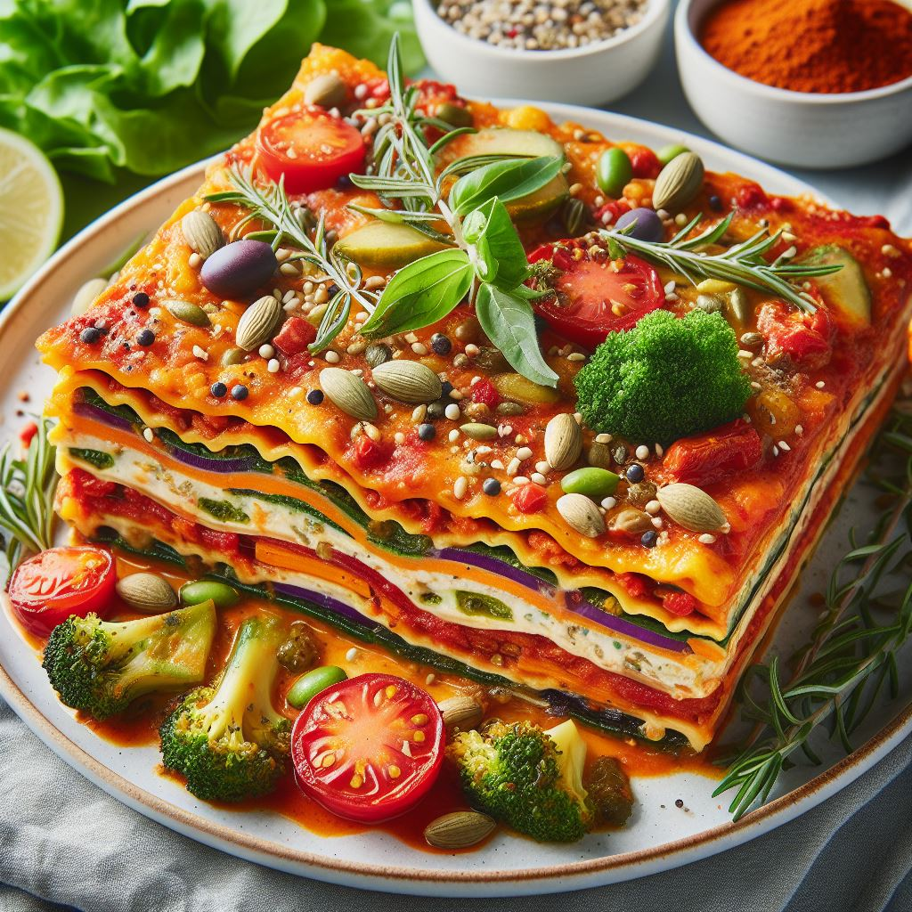

Go back
Vegan lasagna

Vegan Lasagna is a delightful plant-based twist on the classic Italian dish.
Layers of tender lasagna noodles are stacked with sautéed spinach, zucchini, bell peppers, and mushrooms. Creamy plant-based ricotta cheese adds richness, while vegan mozzarella provides gooey goodness. The whole ensemble is bathed in marinara sauce and baked to perfection.
Garnish with fresh basil leaves for a burst of flavor. It‚Äôs a comforting and satisfying meal that even non-vegans will enjoy! üå±üçù
Ingredients
- 9 lasagna noodles
- 2 cups marinara sauce
- 1 cup plant-based ricotta cheese
- 1 cup spinach, chopped
- 1 cup zucchini, thinly sliced
- 1 cup bell peppers, diced
- 1 cup mushrooms, sliced
- 1 cup vegan mozzarella cheese (shredded)
- 1 tablespoon olive oil
- Salt and pepper to taste
- Fresh basil leaves for garnish
Instructions
- Preheat the oven: Preheat your oven to 375°F (190°C).
- Cook the Lasagna Noodles: Boil the lasagna noodles according to the package instructions. Drain and set aside.
- Prepare the Filling:
- In a skillet, heat olive oil over medium heat.
- Add the chopped spinach, zucchini, bell peppers, and mushrooms. Sauté until tender.
- Season with salt and pepper.
- Assemble the Lasagna:
- Spread a thin layer of marinara sauce at the bottom of a baking dish.
- Arrange 3 lasagna noodles on top.
- Layer with half of the sautéed vegetables, followed by half of the plant-based ricotta cheese and half of the vegan mozzarella.
- Repeat the layers: noodles, veggies, ricotta, and mozzarella.
- Top with the remaining marinara sauce and sprinkle more vegan mozzarella on top.
- Bake:
- Cover the baking dish with aluminum foil.
- Bake in the preheated oven for 30 minutes.
- Remove the foil and bake for an additional 10 minutes or until the cheese is melted and bubbly.
- Serve:
- Let the lasagna cool slightly before serving.
- Garnish with fresh basil leaves.